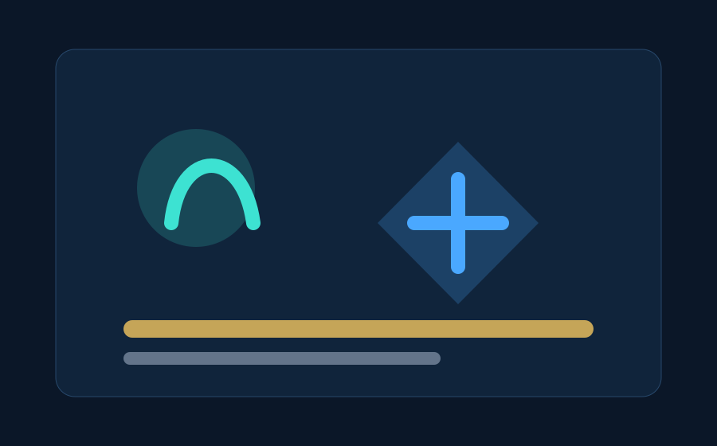
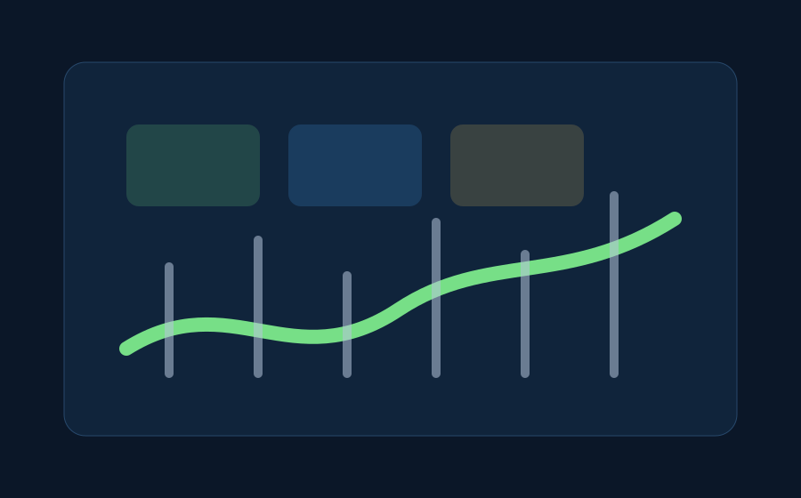
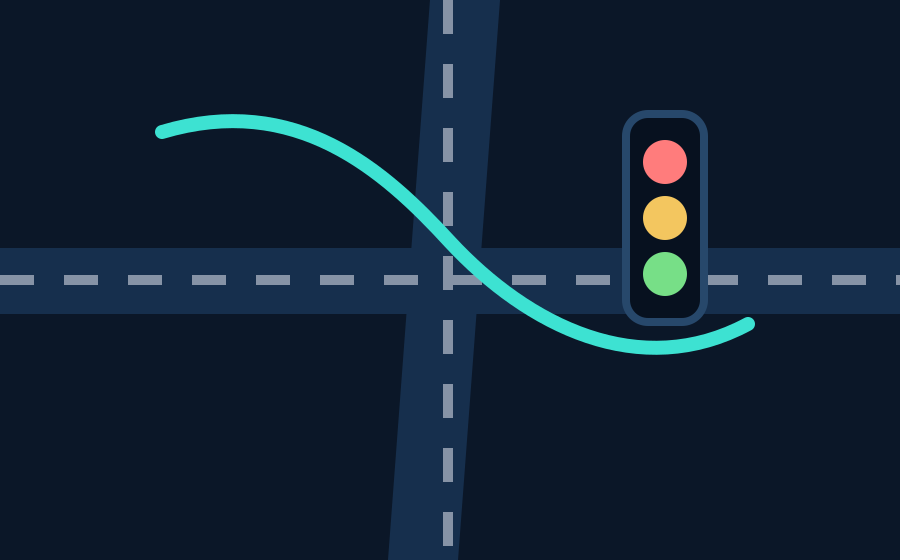
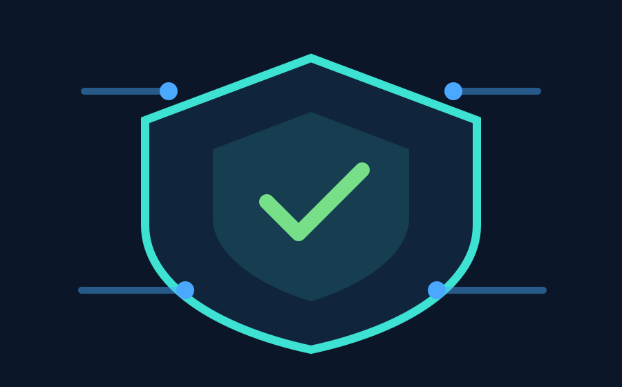

Programming
Python
Java
JavaScript
PHP
SQL
Computer Science Graduate
Software Developer | AI & Cybersecurity Enthusiast | Graphic Designer
Building secure, intelligent, and impactful digital solutions across software engineering, AI, cybersecurity, IT support, and graphic design.
About Me
I am a Computer Science graduate focused on building reliable digital products that solve real problems. My work sits at the intersection of software engineering, artificial intelligence, cybersecurity, IT support, and design.
My career goal is to grow into a versatile technology professional who can design, secure, and support intelligent systems for organizations that need dependable modern tools.
Skills
Projects




Certifications
In Progress
Completed training
Professional learning
Experience
Internship
Supported IT operations, troubleshooting, and digital learning systems.
Freelance
Built web, design, and support solutions for practical client needs.
Volunteer
Helped users adopt digital tools with patient, practical guidance.
Contact